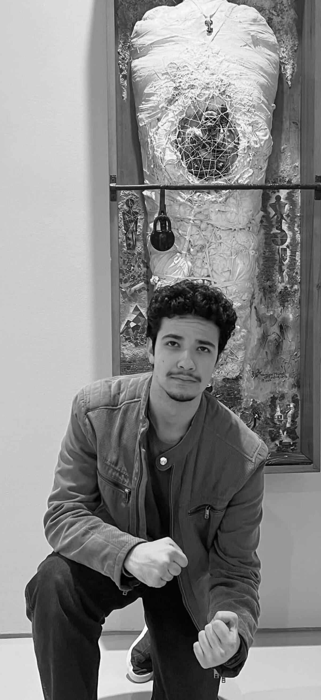
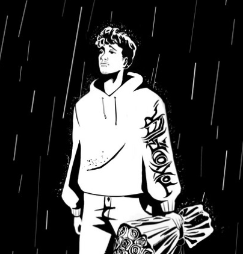
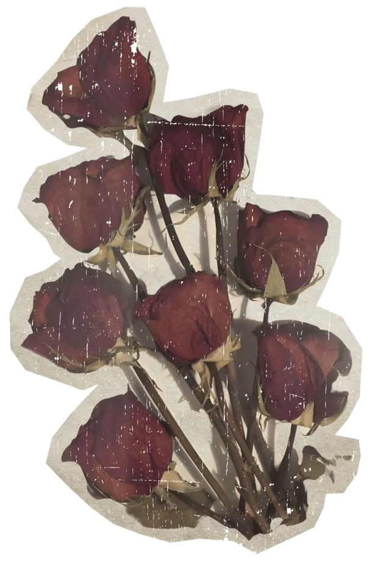
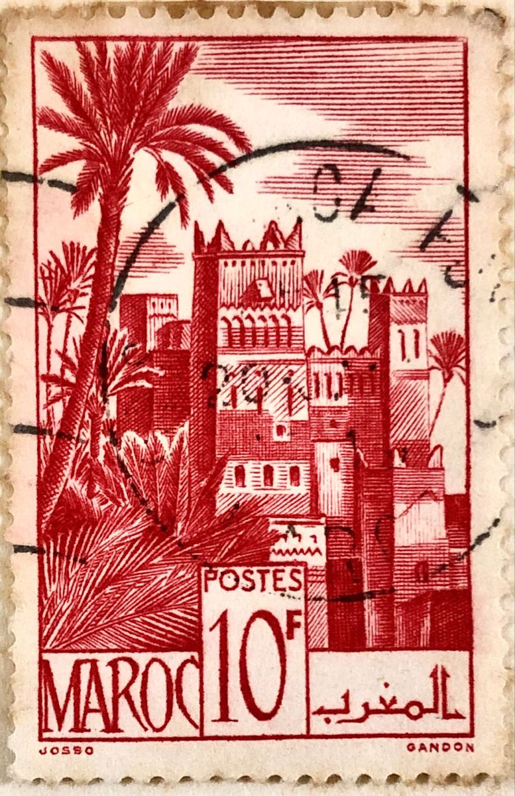

Y4ME
Y4ME is Youssef Baraz, born December 8, 2008 — a Moroccan artist on the indie label UNIXTY. He makes music for fun.
Releases





Y4ME is Youssef Baraz, born December 8, 2008 — a Moroccan artist on the indie label UNIXTY. He makes music for fun.


